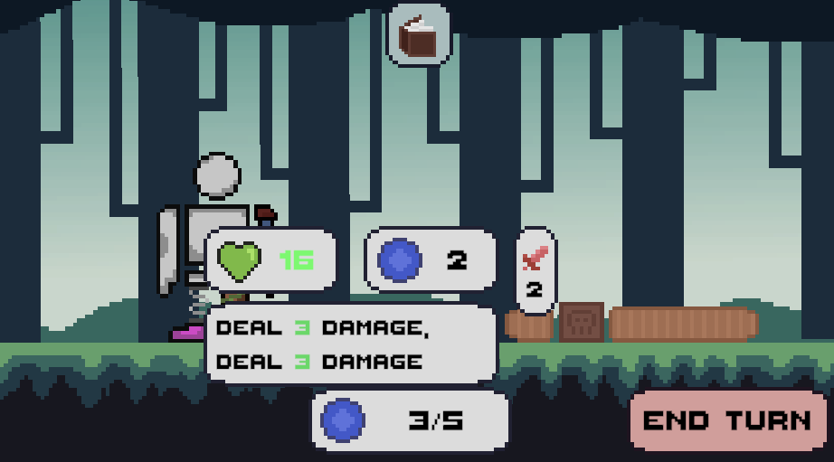

As described by the limitations, I was the only developer on the project. I designed the game from the ground up, wrote all the code, and drew the art. However, as someone who is first and foremost a game programmer, the coding element of the game was my priority. My focus for this project was on the item interactions and the dynamic UI, showcasing dynamically changing variables such as health and damage, and adding status effects. The combination of numerous item abilities from the player and enemies showcases the ability to create many different effects that all follow the logic architected within the code.
